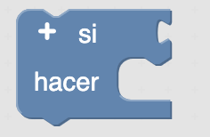
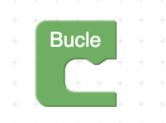

En esta misión vas a crear un chivato de ruido utilizando un micrófono para detectar el nivel de ruido y un zumbador para avisar. El zumbador o buzzer es un transductor electroacústico que produce un sonido o zumbido continuo o intermitente. En función de si se trata de un Buzzer Activo o Pasivo, este
zumbido será del mismo tono o le podremos variar. Sirve como mecanismo de señalización o aviso y se utiliza en múltiples sistemas, como en automóviles o en electrodomésticos, incluidos los despertadores.
Es recomendable conectar el zumbador a los pines digitales.
ArduinoBlocks tiene un bloque específico para el Zumbador, está en el menú de “Actuadores”. A través del bloque RTTTL vas a poder hacer sonar
infinidad de melodías en tu zumbador.

Actuador "Zumbador"
Sensor "Micrófono"

- Entorno de programación por bloques ArduinoBlocks
- Sensores: micrófono
- Actuadores: zumbador
- Bloques de lógica: condicionales.
- Bloques matemáticos: comparación.
|
 |
 |  |

En el siguiente programa, si el micrófono detecta un nivel de sonido superior a 25 el zumbador y reproducirá la melodía seleccionada actuando como control de ruido o chivato.